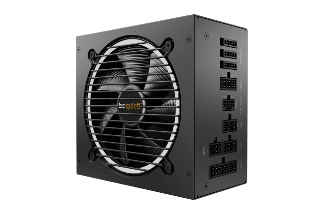

Zasilacz – serce z prądem
Zasilacz (ang. PSU – Power Supply Unit) to podzespół, który dostarcza energię elektryczną do wszystkich części komputera. Jego zadaniem jest zamiana prądu z gniazdka (230V) na odpowiednie napięcia potrzebne dla procesora, karty graficznej, płyty głównej, dysków i wentylatorów. Kluczowe znaczenie ma jego moc (np. 500W, 750W, 1000W) – zbyt słaby zasilacz może powodować niestabilność systemu, a nawet uszkodzenia. Liczy się też sprawność, oznaczana certyfikatami 80 PLUS (im wyższy, tym lepiej – np. Bronze, Gold, Platinum), co wpływa na mniejsze straty energii i niższe rachunki za prąd. Warto wybierać zasilacze modularne, gdzie można podłączyć tylko potrzebne kable – poprawia to wentylację i estetykę wnętrza. Dobry zasilacz to fundament stabilnego i bezpiecznego komputera.
